Mostrar código R
P_3 <- 1/6; P_par <- 3/6; P_mayor_4 <- 2/6
cat("P(3) =", P_3, "\nP(par) =", P_par, "\nP(>4) =", P_mayor_4)P(3) = 0.1666667
P(par) = 0.5
P(>4) = 0.3333333Tema II — Distribuciones Normal, Binomial y Poisson
Dpto. Estadística e Investigación Operativa, Universidad de Granada
2026-01-01

Grado en Fisioterapia
CC BY 4.0 · Miguel Angel Luque-Fernández
Miguel Angel Luque-Fernández · maluque.netlify.app
Dpto. Estadística e Investigación Operativa · Universidad de Granada
Conexión T01→T02: En el Tema 1 aprendiste a describir una muestra (tablas, gráficos, estadísticos). Ahora damos el salto a modelar la población: necesitamos un lenguaje para cuantificar la incertidumbre y la variabilidad. Ese lenguaje es la probabilidad.
| T01 — Descriptiva | → | T02 — Probabilidad |
|---|---|---|
| Resumir lo observado | → | Modelar lo no observado |
| \(\bar{x}\), \(s\), histograma | → | \(P(A)\), distribuciones, densidad |
| «¿Cómo son mis datos?» | → | «¿Qué modelo siguen mis datos?» |
Tip
Al finalizar este tema sabrás:
pnorm(), pbinom(), ppois() y sus equivalentes BioEstatRTres enfoques complementarios para definir la probabilidad:
| Enfoque | Definición | Fundador(es) | Uso en Fisioterapia |
|---|---|---|---|
| Frecuentista | \(P(A) = \lim_{n\to\infty} n_A/n\) | von Mises, Fisher | Estimar tasas de recuperación poblacionales |
| Axiomatica | \(P\) satisface 3 axiomas (Kolmogorov 1933) | Kolmogorov | Base matemática de TODA la estadística |
| Bayesiana | \(P(A \mid B) = \frac{P(B \mid A)P(A)}{P(B)}\) | Bayes, Laplace | Actualizar diagnósticos con evidencia clínica |
Relacion entre los tres enfoques: - El enfoque frecuentista define probabilidad como frecuencia relativa a largo plazo → \(P(A) = \lim_{n\to\infty} n_A/n\) - Kolmogorov demostró que esta definición satisface los axiomas de la teoría de la probabilidad → base matemática rigurosa - El enfoque bayesiano usa esos mismos axiomas pero interpreta \(P(A)\) como grado de creencia, actualizable con el Teorema de Bayes
En Fisioterapia: usamos el enfoque frecuentista para estudios poblacionales, el bayesiano para razonamiento clínico, y ambos descansan sobre los axiomas de Kolmogorov.
Cada día tomas decisiones bajo incertidumbre:
La probabilidad te da las herramientas para:
“La estadística es el arte de tomar decisiones en presencia de incertidumbre.” — Stephen Senn
Experimento aleatorio: Proceso que puede repetirse bajo condiciones idénticas, tiene al menos dos resultados posibles, y cuyo resultado no puede predecirse con certeza.
Espacio muestral (\(\Omega\)): Conjunto de todos los resultados posibles.
Evento (\(A\)): Subconjunto del espacio muestral.
Enfoque frecuentista: \[P(A) = \lim_{n \to \infty} \frac{n_A}{n}\]
Regla de Laplace (resultados equiprobables): \[P(A) = \frac{\text{casos favorables}}{\text{casos posibles}}\]
La frecuencia relativa converge a la probabilidad teórica cuando \(n \to \infty\).
Simulación: Aleatorización de pacientes a Fisioterapia Manual (FM) vs Ejercicio Terapéutico (ET).

Tip
¿Qué significa esto? Los tres axiomas son el “contrato” mínimo que debe cumplir cualquier probabilidad. Todo lo demás (complemento, unión, Bayes…) se deduce de ellos. No necesitas memorizarlos — solo entender que son la base lógica de todo lo que sigue.
Ejemplo clínico — Diagnósticos excluyentes en consulta de fisioterapia:
| Diagnóstico | Frecuencia | Probabilidad |
|---|---|---|
| Lumbalgia | 40 | 0.40 |
| Cervicalgia | 35 | 0.35 |
| Omalgia | 25 | 0.25 |
| Total | 100 | 1.00 |
\(\sum_i P(A_i) = 0.40 + 0.35 + 0.25 = 1.00\) ✓
Nota
Consecuencias algebraicas de los axiomas
De los tres axiomas se deducen todas las reglas de la probabilidad:
| Regla | Fórmula | Derivación |
|---|---|---|
| Complemento | \(P(\bar{A}) = 1 - P(A)\) | \(A \cup \bar{A} = \Omega\), \(A \cap \bar{A} = \emptyset\) ⇒ \(P(A) + P(\bar{A}) = P(\Omega) = 1\) |
| Probabilidad del vacío | \(P(\emptyset) = 0\) | \(\emptyset = \bar{\Omega}\) ⇒ \(P(\emptyset) = 1 - P(\Omega) = 0\) |
| Cota superior | \(P(A) \leq 1\) | \(P(A) = 1 - P(\bar{A}) \leq 1\) pues \(P(\bar{A}) \geq 0\) |
| Unión general | \(P(A \cup B) = P(A) + P(B) - P(A \cap B)\) | Partición: \(A \cup B = A \cup (B \cap \bar{A})\), con \(A\) y \(B \cap \bar{A}\) excluyentes |
Tip
¿Por qué importa esto? No necesitas memorizar las derivaciones — solo saber que TODO en probabilidad (complemento, unión, Bayes, distribuciones) se deduce lógicamente de estos tres axiomas. Son el “ADN” de la estadística.
En clínica, a menudo es más fácil calcular la probabilidad de que algo NO ocurra. La regla del complemento nos permite obtener una probabilidad a partir de la otra.
\[P(\bar{A}) = 1 - P(A)\]
Ejemplo clínico: El 30% de pacientes en consulta de fisioterapia tienen HTA.
\[P(\text{HTA}) = 0.30 \quad \Rightarrow \quad P(\text{no HTA}) = 1 - 0.30 = 0.70\]
Cuando nos preguntamos por la probabilidad de que ocurra al menos uno de varios eventos clínicos, necesitamos la regla de la suma.
\[P(A \cup B) = P(A) + P(B) - P(A \cap B)\]
Ejemplo clínico — Comorbilidad en 100 pacientes de fisioterapia:
40 con HTA, 30 con Diabetes tipo 2, 10 con ambas condiciones.
par(mar=c(2,2,2,2))
plot(NA, xlim=c(-2.2,2.2), ylim=c(-1.8,1.8), axes=F, xlab="", ylab="",
main="Diagrama de Venn: Comorbilidad HTA y DM")
theta <- seq(0, 2*pi, length=200)
polygon(-0.4+1.3*cos(theta), 1.3*sin(theta), col=rgb(0,0,1,0.2), border="blue", lwd=2)
polygon( 0.4+1.3*cos(theta), 1.3*sin(theta), col=rgb(0,0.5,0.3,0.2), border="red", lwd=2)
text(-1, 0.3, "HTA\n(30 solo)", col="blue", font=2, cex=0.9)
text( 1, 0.3, "DM\n(20 solo)", col="darkgreen", font=2, cex=0.9)
text( 0,-0.3, "Ambas\n(10)", font=2, cex=0.9)
text(-2, -1.5, "P(HTA∪DM) = 0.40+0.30-0.10 = 0.60", pos=4, cex=0.85)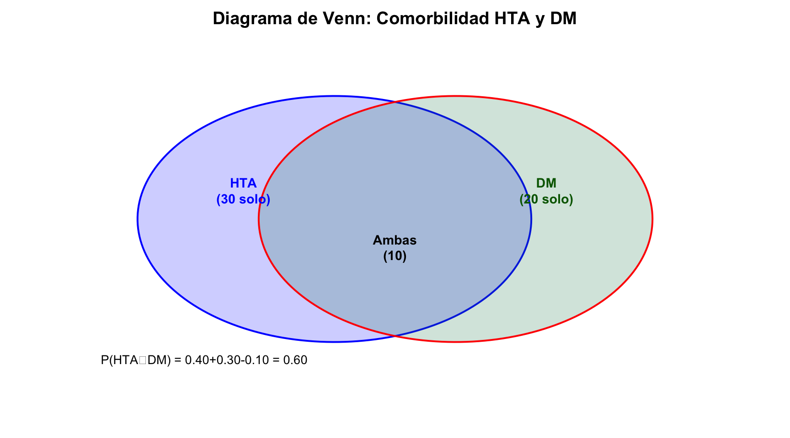
\[P(\text{HTA} \cup \text{DM}) = \frac{40}{100} + \frac{30}{100} - \frac{10}{100} = 0.60\]
par(mfrow=c(1,3), mar=c(2.5, 3, 3.5, 1))
theta <- seq(0, 2*pi, length=400)
# arcos para la lente de intersección
a <- acos(0.35)
ang_r <- seq(pi-a, pi+a, length=200)
ang_l <- seq(-a, a, length=200)
# símbolos ∪ ∩ y fuente Unicode
U <- intToUtf8(8746)
I <- intToUtf8(8745)
par(family = "") # fuente del sistema por defecto
# ── Panel 1: COMPLEMENTO ──
plot(NA, xlim=c(-1.5,1.5), ylim=c(-1.5,1.5), axes=F, xlab="", ylab="",
main=bquote(bold("Complemento:") ~ P(bar(A)) == 1 - P(A)),
cex.main=1.05)
rect(-1.5, -1.5, 1.5, 1.5, col=rgb(0.18,0.53,0.76,0.22), border="#2c3e50", lwd=2.5)
polygon(cos(theta), sin(theta), col="white", border="#2e86c1", lwd=3.5)
text(0, 0, "A", cex=2.5, font=2, col="#2e86c1")
text(1.3, 1.25, expression(bar(A)), cex=1.8, col="#2e86c1", font=2)
text(0, -1.45, "P(Ā) = zona coloreada fuera de A", cex=0.75, col="grey40")
# ── Panel 2: UNIÓN — todo verde (círculos + intersección)
plot(NA, xlim=c(-1.5,1.5), ylim=c(-1.5,1.5), axes=F, xlab="", ylab="",
main=bquote(bold("Union:") ~ P(A * .(U) * B) == P(A) + P(B) - P(A * .(I) * B)),
cex.main=1.05)
polygon(-0.35+cos(theta), sin(theta), col=rgb(0.12,0.52,0.29,0.50), border="#1e8449", lwd=3)
polygon( 0.35+cos(theta), sin(theta), col=rgb(0.12,0.52,0.29,0.50), border="#1e8449", lwd=3)
text(-0.85, 0, "A", cex=2, font=2, col="#1e8449")
text( 0.85, 0, "B", cex=2, font=2, col="#1e8449")
text(0, -1.45, bquote(P(A * .(U) * B) == " toda la zona verde"), cex=0.75, col="grey40")
# ── Panel 3: INTERSECCIÓN ──
plot(NA, xlim=c(-1.5,1.5), ylim=c(-1.5,1.5), axes=F, xlab="", ylab="",
main=bquote(bold("Intersección:") ~ P(A * .(I) * B)),
cex.main=1.05)
polygon(-0.35+cos(theta), sin(theta), col="white", border="#2c3e50", lwd=2.5)
polygon( 0.35+cos(theta), sin(theta), col="white", border="#2c3e50", lwd=2.5)
text(-0.85, 0, "A", cex=2, font=2, col="#2c3e50")
text( 0.85, 0, "B", cex=2, font=2, col="#2c3e50")
polygon(c(0.35+cos(ang_r), -0.35+cos(ang_l)),
c(sin(ang_r), sin(ang_l)),
col=rgb(0.80,0.18,0.15,0.90), border=NA)
text(0, 0.2, bquote(A * .(I) * B), cex=1.4, font=2, col="white")
text(0, -1.45, bquote(P(A * .(I) * B) == " solo zona roja"), cex=0.75, col="grey40")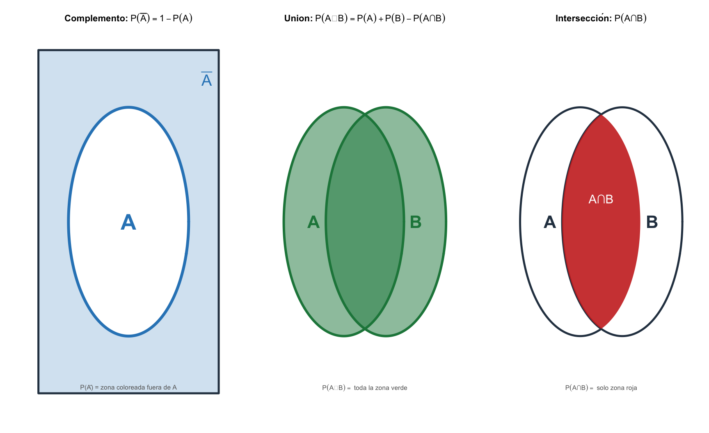
Tip
Para el estudiante: \(\cup\) = unión = O (A o B ocurre, o ambos). \(\cap\) = intersección = Y (A y B ocurren simultáneamente). El complemento \(\bar{A}\) = todo lo que NO es A. En la figura: azul = complemento \(\bar{A}\), verde = unión \(A \cup B\), rojo = intersección \(A \cap B\).
\[P(A \cup B \cup C) = P(A)+P(B)+P(C) - P(A \cap B)-P(A \cap C)-P(B \cap C) + P(A \cap B \cap C)\]
Ejemplo clínico — Tres comorbilidades (n=100 pacientes de fisioterapia):
| Condición | n | Intersecciones | n |
|---|---|---|---|
| HTA (\(A\)) | 40 | \(A \cap B\) | 10 |
| DM (\(B\)) | 30 | \(A \cap C\) | 8 |
| Obesidad (\(C\)) | 20 | \(B \cap C\) | 5 |
| \(A \cap B \cap C\) | 3 |
\[|A \cup B \cup C| = 40 + 30 + 20 - (10 + 8 + 5) + 3 = 90 - 23 + 3 = 70\]
70 de cada 100 pacientes presentan al menos una de las tres condiciones.
Recuperación de lumbalgia según sexo (n=200):
par(mfrow=c(1,2), mar=c(2,3,3,2))
# Panel 1: P(Recuperado | Mujer)
plot(NA, xlim=c(-1.5,1.5), ylim=c(-1.5,1.5), axes=F, xlab="", ylab="",
main="P(Recuperado | Mujer)")
# Espacio muestral: solo mujeres (120)
rect(-1.5,-1.5,1.5,1.5, col=rgb(1,0.7,0.7,0.3), border="pink", lwd=2)
text(0,1.3,"Mujeres (120)",col="darkgreen",font=2,cex=1.1)
# Recuperadas: 72
theta <- seq(0,2*pi,length=200)
polygon(0.6*cos(theta), 0.6*sin(theta), col=rgb(0,0.6,0,0.4), border="darkgreen", lwd=2)
text(0,0,"Recuperadas\n72/120\n= 60%",font=2,cex=1,col="darkgreen")
# Panel 2: P(Recuperado | Hombre)
plot(NA, xlim=c(-1.5,1.5), ylim=c(-1.5,1.5), axes=F, xlab="", ylab="",
main="P(Recuperado | Hombre)")
rect(-1.5,-1.5,1.5,1.5, col=rgb(0.7,0.7,1,0.3), border="lightblue", lwd=2)
text(0,1.3,"Hombres (80)",col="darkblue",font=2,cex=1.1)
polygon(0.6*cos(theta), 0.6*sin(theta), col=rgb(0,0.6,0,0.4), border="darkgreen", lwd=2)
text(0,0,"Recuperados\n32/80\n= 40%",font=2,cex=1,col="darkgreen")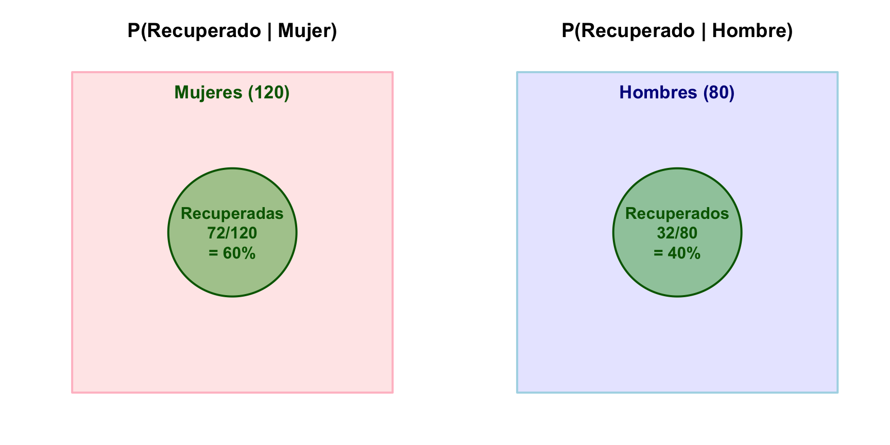
La probabilidad condicional reduce el espacio muestral al subconjunto condicionante.
\[P(A \mid B) = \frac{P(A \cap B)}{P(B)}, \quad P(B) > 0\]
Ejemplo clínico — Recuperación de lumbalgia según sexo (n=200):
| Recuperado (\(R\)) | No recuperado | Total | |
|---|---|---|---|
| Mujer | 72 | 48 | 120 |
| Hombre | 32 | 48 | 80 |
| Total | 104 | 96 | 200 |
\[P(R \mid \text{Mujer}) = \frac{72/200}{120/200} = \frac{72}{120} = 0.60\]
\[P(R \mid \text{Hombre}) = \frac{32/200}{80/200} = \frac{32}{80} = 0.40\]
Cuando dos eventos no se influyen mutuamente, podemos simplificar los cálculos. Pero necesitamos un criterio formal para determinarlo.
\(A\) y \(B\) son independientes si \(P(A \cap B) = P(A) \cdot P(B)\), o equivalentemente si \(P(A \mid B) = P(A)\).
Ejemplo clínico — Ejercicio Terapéutico y Mejoría (n=100):
| Mejoría (\(M\)) | No mejoría | Total | |
|---|---|---|---|
| Ejercicio (\(E\)) | 30 | 20 | 50 |
| Sin ejercicio | 20 | 30 | 50 |
| Total | 50 | 50 | 100 |
\(P(M) = 50/100 = 0.50\) \(P(M \mid E) = 30/50 = 0.60\)
\(P(M \mid E) = 0.60 \neq 0.50 = P(M)\) → NO son independientes. El ejercicio terapéutico está asociado con la mejoría.
El espacio muestral \(\Omega\) se particiona en \(B_1, B_2, B_3\) (excluyentes, \(\cup B_i = \Omega\)). El evento \(A\) se distribuye a través de todas las particiones:
\[P(A) = P(A \mid B_1) \cdot P(B_1) + P(A \mid B_2) \cdot P(B_2) + P(A \mid B_3) \cdot P(B_3)\]
par(mar=c(3, 2, 5, 2), bg="white")
plot(NA, xlim=c(-0.5, 16.5), ylim=c(-0.8, 11), axes=F, xlab="", ylab="",
main="Teorema de la Probabilidad Total — Partición de Ω y Evento A")
# colores verde-azul
col_O_fill <- "#f8fafb"
col_O_bord <- "#1a3a4a"
col_B1_fill <- rgb(0.35, 0.75, 0.55, 0.30) # verde suave
col_B1_bord <- "#1e6e3e"
col_B2_fill <- rgb(0.30, 0.68, 0.75, 0.30) # verde-azulado
col_B2_bord <- "#1a5c6e"
col_B3_fill <- rgb(0.25, 0.50, 0.80, 0.30) # azul medio
col_B3_bord <- "#1a4070"
col_A_fill <- rgb(0.15, 0.35, 0.60, 0.25) # azul profundo semitransparente
col_A_bord <- "#0f2a4a"
col_lbl <- "#0d3b66"
# Ω — rectángulo exterior
xL <- 0.5; xR <- 15.5; yB <- 0.3; yT <- 10.0
rect(xL, yB, xR, yT, col=col_O_fill, border=col_O_bord, lwd=4)
text(1.2, yT - 0.25, expression(Omega), cex=2.0, font=2, col=col_O_bord)
# Particiones (60%, 30%, 10% del ancho de Ω)
w <- xR - xL
b1r <- xL + w * 0.60
b2r <- b1r + w * 0.30
rect(xL, yB, b1r, yT, col=col_B1_fill, border=col_B1_bord, lwd=3)
text(xL + w*0.30, yT - 0.25, expression(B[1]), cex=1.6, col=col_B1_bord, font=2)
text(xL + w*0.30, yT - 0.65, "(Bajo riesgo, 60%)", cex=1.2, col=col_B1_bord)
rect(b1r, yB, b2r, yT, col=col_B2_fill, border=col_B2_bord, lwd=3)
text(b1r + w*0.15, yT - 0.25, expression(B[2]), cex=1.6, col=col_B2_bord, font=2)
text(b1r + w*0.15, yT - 0.65, "(Moderado, 30%)", cex=1.2, col=col_B2_bord)
rect(b2r, yB, xR, yT, col=col_B3_fill, border=col_B3_bord, lwd=3)
text(b2r + w*0.05, yT - 0.25, expression(B[3]), cex=1.5, col=col_B3_bord, font=2)
text(b2r + w*0.05, yT - 0.65, "(Alto, 10%)", cex=1.1, col=col_B3_bord)
# Evento A — elipse dentro de Ω que cubre las 3 particiones
theta <- seq(0, 2*pi, length=300)
cx <- (xL + xR) / 2; cy <- (yB + yT) / 2
rx <- w * 0.47; ry <- (yT - yB) * 0.43
x_ell <- cx + rx*cos(theta)
y_ell <- cy + ry*sin(theta)
polygon(x_ell, y_ell, col=col_A_fill, border=col_A_bord, lwd=4)
text(cx, cy, "Evento A\n(Recuperación)", cex=1.3, col=col_A_bord, font=2)
# Etiquetas: intersecciones y probabilidades condicionadas
text(xL + w*0.30, cy + 0.9, expression(A * " ∩ " * B[1] * ":"), cex=1.25, col=col_A_bord, font=2)
text(xL + w*0.30, cy - 0.6, expression(P(A * "|" * B[1]) == 0.90), cex=1.2, col=col_lbl)
text(b1r + w*0.15, cy + 0.9, expression(A * " ∩ " * B[2] * ":"), cex=1.25, col=col_A_bord, font=2)
text(b1r + w*0.15, cy - 0.6, expression(P(A * "|" * B[2]) == 0.70), cex=1.2, col=col_lbl)
text(b2r + w*0.05, cy + 0.9, expression(A * " ∩ " * B[3] * ":"), cex=1.15, col=col_A_bord, font=2)
text(b2r + w*0.05, cy - 0.6, expression(P(A * "|" * B[3]) == 0.40), cex=1.15, col=col_lbl)
# Fórmula de probabilidad total (debajo de Ω)
text((xL + xR)/2, yB - 0.35,
expression(P(A) == P(A * "|" * B[1]) * " · " * P(B[1]) ~+~
P(A * "|" * B[2]) * " · " * P(B[2]) ~+~
P(A * "|" * B[3]) * " · " * P(B[3])),
cex=1.4, col=col_A_bord, font=2)
text((xL + xR)/2, yB - 0.8,
"P(Recuperación) = 0.90 × 0.60 + 0.70 × 0.30 + 0.40 × 0.10 = 0.79",
cex=1.25, font=2, col=col_A_bord)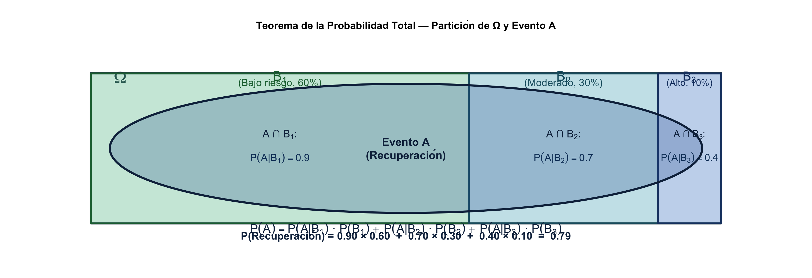
Contexto clínico: Tres grupos de riesgo en rehabilitación de lumbalgia:
| Grupo de riesgo | \(P(B_i)\) | \(P(R \mid B_i)\) | Aporte \(P(R \mid B_i) \cdot P(B_i)\) |
|---|---|---|---|
| Bajo (sin comorbilidades) | 0.60 | 0.90 | 0.54 |
| Moderado (una comorbilidad) | 0.30 | 0.70 | 0.21 |
| Alto (múltiples comorbilidades) | 0.10 | 0.40 | 0.04 |
| Total | 1.00 | \(P(R) = 0.79\) |
aporte <- c(0.54, 0.21, 0.04)
names(aporte) <- c("Bajo\n(0.60×0.90)", "Moderado\n(0.30×0.70)", "Alto\n(0.10×0.40)")
bp <- barplot(aporte, col=c("darkgreen","orange","red"),
main="Aportes a P(Recuperación) = 0.79",
ylab="Probabilidad", ylim=c(0,0.6))
text(bp, aporte+0.02, aporte, font=2, cex=1.2)
abline(h=0.79, col="blue", lwd=2, lty=2)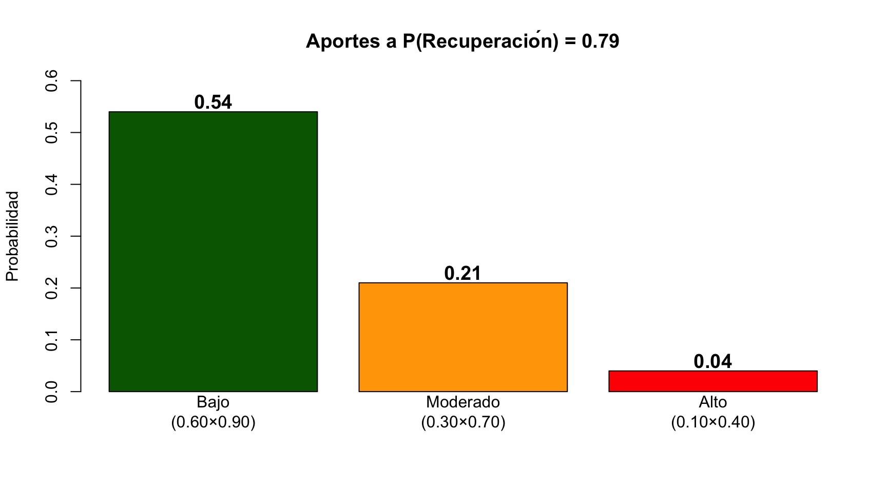
Importante
Si \(B_1, B_2, \ldots, B_k\) son mutuamente excluyentes y cubren todo el espacio muestral (\(\cup_i B_i = \Omega\)), entonces para cualquier evento \(A\):
\[P(A) = \sum_{i=1}^{k} P(A \mid B_i) \cdot P(B_i)\]
La probabilidad total es la suma ponderada de las probabilidades condicionadas a cada estrato, usando como pesos las proporciones de cada estrato en la población.
Importante
Permite actualizar la probabilidad de una hipótesis \(A\) con nueva evidencia \(B\):
\[P(A \mid B) = \frac{P(B \mid A) \cdot P(A)}{P(B)}\]
Usando Probabilidad Total en el denominador:
\[P(A \mid B) = \frac{P(B \mid A) \cdot P(A)}{P(B \mid A) \cdot P(A) + P(B \mid NoA) \cdot P(NoA)}\]
Enunciado: Prevalencia de enfermedad \(P(D)=0.01\) (1%). Test con sensibilidad \(P(+ \mid D)=0.99\) (99%) y especificidad \(P(- \mid NoD)=0.95\) (95%).
Si una persona da positivo, ¿probabilidad de que tenga la enfermedad?
Paso 1 — Probabilidad total de dar positivo:
\[P(+) = P(+ \mid D) \cdot P(D) + P(+ \mid NoD) \cdot P(NoD)\] \[P(+) = 0.99 \times 0.01 + 0.05 \times 0.99 = 0.0099 + 0.0495 = 0.0594\]
Paso 2 — Aplicar Bayes:
\[P(D \mid +) = \frac{P(+ \mid D) \cdot P(D)}{P(+)} = \frac{0.99 \times 0.01}{0.0594} = \frac{0.0099}{0.0594} = 0.1667\]
P_D <- 0.01; P_NoD <- 0.99
P_Pos_given_D <- 0.99; P_Pos_given_NoD <- 0.05
P_Pos <- (P_Pos_given_D * P_D) + (P_Pos_given_NoD * P_NoD)
P_D_given_Pos <- (P_Pos_given_D * P_D) / P_Pos
cat("P(+) =", round(P_Pos, 4),
"\nP(D | +) =", round(P_D_given_Pos, 4),
"\n→ Solo el 16.7% de los positivos tienen la enfermedad")P(+) = 0.0594
P(D | +) = 0.1667
→ Solo el 16.7% de los positivos tienen la enfermedadAdvertencia
A pesar de la alta sensibilidad (99%), el VPP es solo 16.7% porque la baja prevalencia (1%) hace que los falsos positivos dominen: \(P(+ \mid NoD) \times P(NoD) = 0.0495\) > \(P(+ \mid D) \times P(D) = 0.0099\).
Si P(Recuperado | Mujer) = 60% y P(Recuperado | Hombre) = 40%, ¿significa esto que el sexo causa la diferencia en recuperación? ¿Qué otra explicación podría haber?
En el ejemplo, P(M | E) = 0.60 y P(M) = 0.50. ¿Qué necesitarías cambiar en la tabla para que Ejercicio y Mejoría fueran independientes?
Thomas Bayes (1701–1761)
Pierre-Simon Laplace (1749–1827)
Nota
Ironía histórica: Bayes nunca publicó su teorema en vida. Hoy lleva su nombre una rama entera de la estadística que él nunca imaginó.
Tip
Dato clave: Laplace aplicó el teorema de Bayes para estimar la masa de Saturno y la población de Francia, mostrando que la inferencia probabilística inversa funciona tanto para el cosmos como para los censos.
Importante
El teorema de Bayes es la piedra angular de la estadística bayesiana: un paradigma donde la probabilidad representa grado de creencia (incertidumbre subjetiva), y no solo frecuencia a largo plazo.
El flujo bayesiano:
\[\underbrace{P(\theta)}_{\text{Distribución a priori}} \;\; \times \;\; \underbrace{P(\text{datos} \mid \theta)}_{\text{Verosimilitud}} \;\; \propto \;\; \underbrace{P(\theta \mid \text{datos})}_{\text{Distribución a posteriori}}\]
| Concepto | Enfoque Frecuentista | Enfoque Bayesiano |
|---|---|---|
| Parámetro \(\theta\) | Fijo, desconocido | Variable aleatoria |
| Probabilidad | Frecuencia a largo plazo | Grado de creencia |
| Inferencia | Estimadores, IC, p-valores | Distribución a posteriori, intervalos creíbles |
| Información previa | No se incorpora formalmente | Se modela explícitamente con la priori |
| Interpretación IC | “El 95% de los IC contienen \(\theta\)” | “Hay 95% de probabilidad de que \(\theta\) esté en el intervalo” |
En Fisioterapia: La estadística bayesiana permite actualizar probabilidades diagnósticas con cada nueva prueba o signo clínico — el razonamiento clínico es inherentemente bayesiano.
El test tiene 99% de sensibilidad pero el VPP es solo 16.7%. ¿Qué cambiaría si la prevalencia fuera del 10% en lugar del 1%?
Conexión: Hasta ahora hemos cuantificado la incertidumbre de eventos clínicos mediante reglas de probabilidad. Las variables aleatorias nos permiten modelizar esa incertidumbre matemáticamente, asignando números a los resultados y describiendo su distribución.

Cada paciente es único. La probabilidad nos da el lenguaje para cuantificar la incertidumbre clínica y tomar decisiones informadas.

Hasta aquí hemos modelado eventos (A, B, intersecciones, condicionales). Ahora damos el salto a modelar variables: magnitudes clínicas que varían de paciente a paciente. Una variable aleatoria asigna un número a cada resultado incierto.
| En T01 (Descriptiva) | En T02 (Probabilidad) |
|---|---|
| \(\bar{x}\) — media muestral | \(\mu = E(X)\) — esperanza poblacional |
| \(s^2\) — varianza muestral | \(\sigma^2 = \Var(X)\) — varianza poblacional |
| \(s\) — desviación típica muestral | \(\sigma = \SD(X)\) — desviación típica poblacional |
| \(\hat{p}\) — proporción muestral | \(p = P(X \in A)\) — probabilidad poblacional |
| Describías tu muestra | Modelas la población |
Para modelar matemáticamente la incertidumbre clínica, necesitamos asignar valores numéricos a los resultados inciertos: esto es una variable aleatoria.
Nota
Una variable aleatoria (VA) es una función que asigna un valor numérico a cada resultado de un experimento aleatorio.
Tipos de variables aleatorias:
| Tipo | Descripción | Ejemplo en Fisioterapia |
|---|---|---|
| Discreta | Toma valores aislados (contables) | Nº de sesiones hasta mejoría |
| Continua | Toma cualquier valor en un intervalo | Rango de movimiento (grados) |
Función de probabilidad / densidad: Describe el comportamiento probabilístico de la VA. Para discretas usamos la función de masa \(P(X=x)\). Para continuas, la función de densidad \(f(x)\) donde el área bajo la curva entre \(a\) y \(b\) es \(P(a \leq X \leq b)\).
Nota
f.m.p.: \(P(X = x) = f(x)\) asigna una probabilidad a cada valor posible de una VA discreta.
Propiedades: (1) \(P(X = x) \geq 0\) para todo \(x\); (2) \(\sum_x P(X = x) = 1\)
Ejemplo clínico: \(X\) = nº de pacientes con mejoría en 3 tratados (\(p=0.5\))
| \(x\) | 0 | 1 | 2 | 3 |
|---|---|---|---|---|
| \(P(X=x)\) | 1/8 = 0.125 | 3/8 = 0.375 | 3/8 = 0.375 | 1/8 = 0.125 |
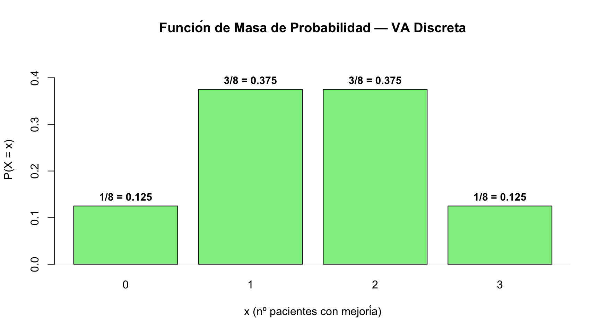
Verificación: \(\sum P(X=x) = 0.125+0.375+0.375+0.125 = 1.00\) ✓
Nota
\[E(X) = \sum_i x_i \cdot P(X = x_i)\]
La esperanza es el valor esperado o media poblacional de la VA.
Ejemplo (mejoría en 3 pacientes):
| \(x_i\) | \(P(X=x_i)\) | \(x_i \cdot P(X=x_i)\) |
|---|---|---|
| 0 | 1/8 | \(0 \times 1/8 = 0\) |
| 1 | 3/8 | \(1 \times 3/8 = 3/8\) |
| 2 | 3/8 | \(2 \times 3/8 = 6/8\) |
| 3 | 1/8 | \(3 \times 1/8 = 3/8\) |
\[E(X) = 0 + \frac{3}{8} + \frac{6}{8} + \frac{3}{8} = \frac{12}{8} = 1.5\]
Interpretación: En promedio se espera que 1.5 de cada 3 pacientes muestren mejoría.
Nota
\[\text{Var}(X) = E[(X - \mu)^2] = \sum_i (x_i - \mu)^2 \cdot P(X=x_i)\]
Fórmula alternativa: \(\text{Var}(X) = E(X^2) - [E(X)]^2\)
Ejemplo (mejoría, \(\mu = 1.5\)):
| \(x_i\) | \(P(X=x_i)\) | \((x_i - 1.5)^2\) | \((x_i-1.5)^2 \cdot P(X=x_i)\) |
|---|---|---|---|
| 0 | 1/8 | 2.25 | 2.25 × 1/8 = 0.281 |
| 1 | 3/8 | 0.25 | 0.25 × 3/8 = 0.094 |
| 2 | 3/8 | 0.25 | 0.25 × 3/8 = 0.094 |
| 3 | 1/8 | 2.25 | 2.25 × 1/8 = 0.281 |
\[\text{Var}(X) = 0.281+0.094+0.094+0.281 = 0.75\]
Nota
\[F(x) = P(X \leq x)\]
La f.d.a. acumula la probabilidad desde \(-\infty\) hasta \(x\). Es no decreciente, \(\lim_{x\to-\infty}F(x)=0\), \(\lim_{x\to\infty}F(x)=1\), y \(P(a < X \leq b) = F(b) - F(a)\).
mu <- 30; sigma <- 8
curve(pnorm(x, mu, sigma), mu-24, mu+24, lwd=3, col="steelblue",
main=expression(paste("f.d.a. Normal: F(x) = P(X ≤ x), N(30,", 8^2, ")")),
xlab="Fuerza de prensión (kg)", ylab="F(x)")
abline(h=c(0,0.5,1), lty=3, col="grey"); abline(v=mu, lty=2, col="darkgreen")
# Marcar F(22)
arrows(22, 0, 22, pnorm(22, mu, sigma), col="darkgreen", lwd=2, length=0.1)
points(22, pnorm(22, mu, sigma), pch=19, col="darkgreen", cex=1.5)
text(22, pnorm(22,mu,sigma)+0.05, paste0("F(22) = ", round(pnorm(22,mu,sigma),3)), col="darkgreen", font=2)
\[F(22) = P(X \leq 22) = \Phi\left(\frac{22-30}{8}\right) = \Phi(-1) = 0.159\]
par(mfrow=c(1,2), mar=c(4,4,3,1))
# DISCRETA: Binomial(10, 0.4) — funcion escalonada
x_d <- 0:10; Fx_d <- pbinom(x_d, 10, 0.4)
plot(x_d, Fx_d, type="s", lwd=3, col="steelblue",
main="f.d.a. Discreta — Binomial(10,0.4)",
xlab="x", ylab="F(x)", ylim=c(0,1), xlim=c(-0.5,10.5))
abline(h=c(0,0.5,1), lty=3, col="grey"); points(x_d, Fx_d, pch=19, col="steelblue", cex=1.2)
# CONTINUA: Normal(0,1) — función continua
curve(pnorm(x), -4, 4, lwd=3, col="seagreen",
main="f.d.a. Continua — Normal(0,1)",
xlab="x", ylab="F(x)", ylim=c(0,1))
abline(h=c(0,0.5,1), lty=3, col="grey"); abline(v=0, lty=3, col="grey")
points(0, 0.5, pch=19, col="darkgreen", cex=1.5)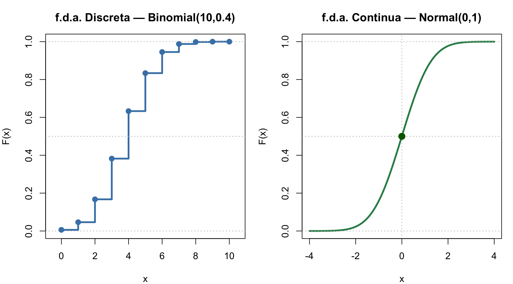
VA Discreta: \(F(x) = \sum_{x_i \leq x} P(X=x_i)\) → función escalonada, salta en cada valor posible
VA Continua: \(F(x) = \int_{-\infty}^x f(t)dt\) → función continua suave, sin saltos
Nota
\[P(a \leq X \leq b) = \text{área bajo } f(x) \text{ entre } a \text{ y } b\]
La probabilidad es el área bajo la curva de la función de densidad \(f(x)\).
Propiedades: (1) \(f(x) \geq 0\); (2) área total bajo \(f(x)\) = 1; (3) \(P(X=c) = 0\) para cualquier \(c\)
Tip
Notación: El símbolo \(\int_a^b f(x)dx\) significa “área bajo la curva \(f(x)\) entre \(a\) y \(b\)”. En este curso siempre usaremos R (pnorm, dnorm, pt, pchisq) en lugar de calcular integrales a mano.
set.seed(123)
ROM <- rnorm(500, mean=150, sd=20)
hist(ROM, col="steelblue", border="white", breaks=25, freq=FALSE,
main="f.d.p. — ROM de Hombro (n=500)",
xlab="Grados de flexión", ylab="Densidad de probabilidad f(x)", cex.lab=1.1)
curve(dnorm(x, 150, 20), add=TRUE, col="darkgreen", lwd=3)
# Sombrear P(130 ≤ X ≤ 170)
xr <- seq(130, 170, 0.5); yr <- dnorm(xr, 150, 20)
polygon(c(xr, rev(xr)), c(yr, rep(0,length(yr))), col=rgb(0,0.5,0.3,0.25), border=NA)
text(150, 0.003, paste("P(130≤X≤170) =",
round(pnorm(170,150,20)-pnorm(130,150,20),3)), font=2, cex=1.1, col="darkgreen")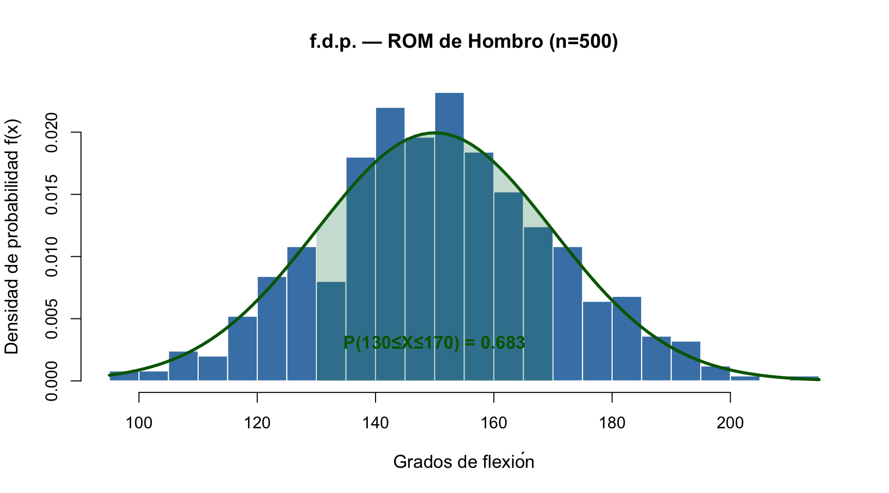
Nota
\[E(X) = \int_{-\infty}^{\infty} x \cdot f(x)\,dx \qquad \text{Var}(X) = \int_{-\infty}^{\infty} (x-\mu)^2 \cdot f(x)\,dx\]
Ejemplo — ROM de hombro (\(\mu=150\), \(\sigma=20\)):
E(X) teórica = 150° E(X) simulada = 150 °
Var(X) teórica = 400 Var(X) simulada = 398.9
σ teórica = 20° σ simulada = 20 °# Comparación de dos VA continuas con distinta dispersión
curve(dnorm(x, 150, 10), 110, 190, col="steelblue", lwd=3,
main=expression(paste("Dos VA Normales: misma ", mu, ", distinta ", sigma)),
xlab="Grados ROM", ylab="f(x)", cex.lab=1.1)
curve(dnorm(x, 150, 25), 110, 190, col="seagreen", lwd=3, add=TRUE)
abline(v=150, lty=2, col="grey")
legend("topright", c(expression(sigma==10), expression(sigma==25)),
col=c("steelblue","coral"), lwd=3, bty="n", cex=1.2)
text(150, 0.04, expression(mu==150), pos=1, cex=1.1)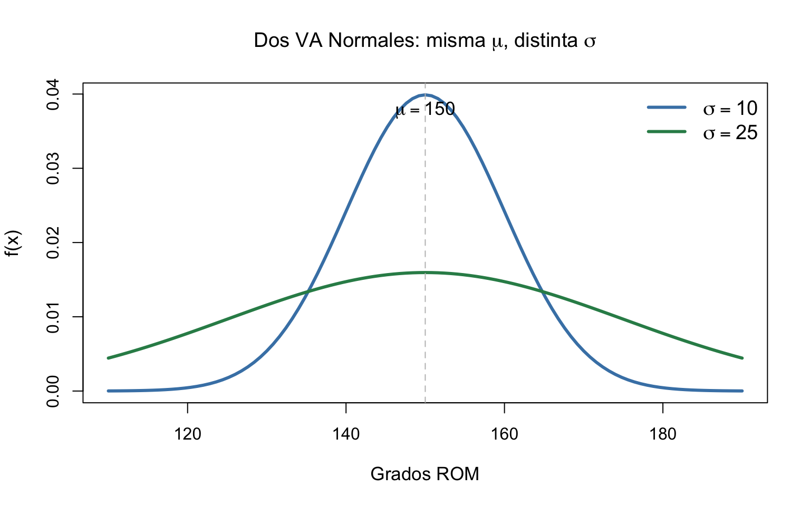
Interpretación: Ambas tienen la misma esperanza (\(\mu=150°\)), pero la distribución naranja (\(\sigma=25\)) tiene mayor dispersión que la azul (\(\sigma=10\)).
| Concepto | VA Discreta | VA Continua |
|---|---|---|
| Función de probabilidad | f.m.p.: \(P(X=x)\) | f.d.p.: \(f(x)\) |
| Probabilidad en intervalo | \(\sum_{x \in [a,b]} P(X=x)\) | \(\int_a^b f(x)\,dx\) |
| Probabilidad puntual | \(P(X=x) \geq 0\) | \(P(X=x) = 0\) |
| f.d.a. | \(F(x) = \sum_{x_i \leq x} P(X=x_i)\) | \(F(x) = \int_{-\infty}^x f(t)\,dt\) |
| Normalización | \(\sum_x P(X=x) = 1\) | \(\int_{-\infty}^{\infty} f(x)\,dx = 1\) |
| Esperanza \(E(X)\) | \(\sum x_i \cdot P(X=x_i)\) | \(\int x \cdot f(x)\,dx\) |
| Varianza \(\text{Var}(X)\) | \(\sum (x_i-\mu)^2 \cdot P(X=x_i)\) | \(\int (x-\mu)^2 \cdot f(x)\,dx\) |
par(mfrow=c(1,2), mar=c(4,4,3,1))
# Discreta: Binomial
x <- 0:10
plot(x, dbinom(x,10,0.5), type="h", lwd=4, col="steelblue",
main="VA Discreta: Binomial(10,0.5)", xlab="x", ylab="P(X=x)")
# Continua: Normal
curve(dnorm(x), -4, 4, lwd=3, col="seagreen",
main="VA Continua: Normal(0,1)", xlab="x", ylab="f(x)")
| Prefijo | Función | Fórmula | Ejemplo (Normal) |
|---|---|---|---|
d |
Densidad/Masa | \(f(x)\) | dnorm(x, mean, sd) |
p |
Distribución acumulada | \(F(x) = P(X \leq x)\) | pnorm(q, mean, sd) |
q |
Cuantil (percentil) | \(F^{-1}(p)\) | qnorm(p, mean, sd) |
r |
Aleatorio | Genera \(n\) valores | rnorm(n, mean, sd) |
Tip
Este patrón se repite para todas las distribuciones: dbinom, pbinom, qbinom, rbinom; dpois, ppois, qpois, rpois, etc.
Conexión: R dispone de funciones específicas para cada distribución de probabilidad. Aprender a usarlas correctamente es tan importante como entender la teoría.
lower.tail — La Opción Más Útil de las Funciones pTodas las funciones p (acumuladas) tienen el argumento lower.tail:
lower.tail = TRUE (por defecto):
- pnorm(k) = \(P(X \leq k)\)
- pbinom(k, n, p) = \(P(X \leq k)\)
- ppois(k, lambda) = \(P(X \leq k)\)
Calcula el área desde \(-\infty\) hasta \(k\)
lower.tail = FALSE:
- pnorm(k, lower.tail=FALSE) = \(P(X > k)\)
- pbinom(k, n, p, lower.tail=FALSE) = \(P(X > k)\)
- ppois(k, lambda, lower.tail=FALSE) = \(P(X > k)\)
Calcula el área desde \(k\) hasta \(+\infty\)
Equivalencia fundamental:
lower.tail — Equivalencias y PrecaucionesVariables continuas (Normal, t, χ², F):
| Quiero calcular… | Normal (continua) | Binomial/Poisson (discreta) |
|---|---|---|
| \(P(X \leq k)\) | pnorm(k) |
pbinom(k, n, p) / ppois(k, λ) |
| \(P(X < k)\) | pnorm(k) (= \(P(X \leq k)\)) |
pbinom(k-1, n, p) ⚠️ |
| \(P(X > k)\) | pnorm(k, lower.tail=FALSE) |
pbinom(k, n, p, lower.tail=FALSE) |
| \(P(X \geq k)\) | pnorm(k, lower.tail=FALSE) (= \(P(X > k)\)) |
1 - pbinom(k-1, n, p) ⚠️ |
Advertencia
Truco para estudiantes: En variables discretas (Binomial, Poisson), \(P(X < k) \neq P(X \leq k)\). La diferencia es \(P(X=k)\). Usad lower.tail=FALSE para colas derechas y recordad restar 1 al límite para desigualdades estrictas.
Puente con T03 — Estimación: La distribución Normal es la base del Teorema Central del Límite, que veremos en el Tema 3. Todo lo que aprendas aquí sobre pnorm(), qnorm() y Z-scores se usará para construir intervalos de confianza y contrastes de hipótesis.
Carl Friedrich Gauss (1777–1855) introdujo esta distribución estudiando errores de medición astronómica. Originalmente llamada “campana de Gauss”, hoy es la distribución más importante en estadística.
¿Por qué es tan ubicua? Por el Teorema Central del Límite: la suma de muchas variables independientes tiende a una Normal, sin importar su distribución original. Por eso aparece en biología, medicina, economía, física…
curve(dnorm(x, 0, 1), -4, 4, lwd=3, col="steelblue",
main=expression(paste("Distribución Normal ", N(mu, sigma^2))),
xlab="x", ylab=expression(f(x)))
# μ ± σ (68%)
x1<-seq(-1,1,0.01); polygon(c(x1,rev(x1)),c(dnorm(x1),rep(0,length(x1))),col=rgb(0,0,1,0.2),border=NA)
# μ ± 2σ (95%)
x2<-seq(-2,2,0.01); polygon(c(x2,rev(x2)),c(dnorm(x2),rep(0,length(x2))),col=rgb(0,0,1,0.1),border=NA)
abline(v=c(-2,-1,0,1,2), lty=c(3,2,1,2,3), col=c("grey","grey","red","grey","grey"))
text(0, 0.25, "68%", cex=1.2); text(0, 0.05, "95%", cex=1.2)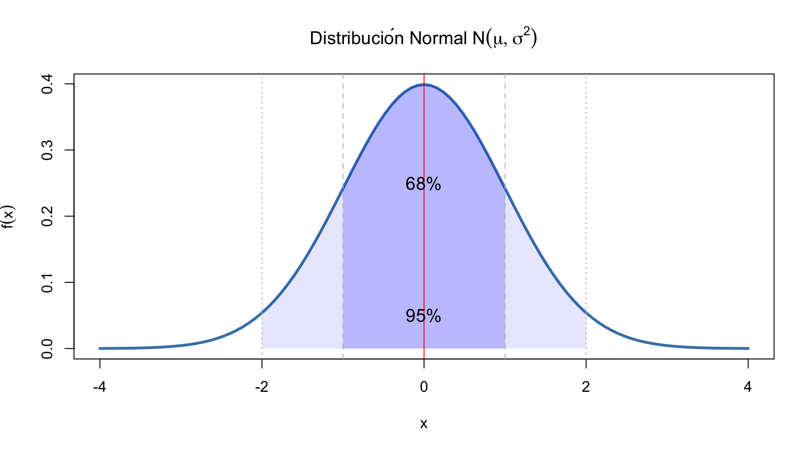
La curva normal describe la distribución de errores y de fenómenos naturales donde muchas causas pequeñas se suman. Hoy, en fisioterapia, modela: fuerza muscular, ROM articular, presión arterial, y prácticamente cualquier variable biológica continua.
Nota
\[f(x) = \frac{1}{\sigma\sqrt{2\pi}} \exp\left\{-\frac{(x-\mu)^2}{2\sigma^2}\right\}, \quad -\infty < x < \infty\]
Ejemplo clínico: Fuerza de prensión manual: \(X \sim N(30, 8^2)\) kg
Efecto de cambiar \(\mu\) y \(\sigma\) en la forma de la campana:
par(mfrow=c(1,2), mar=c(4,4,3,1))
# Cambiar μ
curve(dnorm(x, 0, 1), -5, 8, lwd=3, col="steelblue", ylab="Densidad",
main=expression(paste("Cambiando ", mu, " (", sigma, "=1)")), xlab="x")
curve(dnorm(x, 2, 1), -5, 8, lwd=3, col="seagreen", add=TRUE)
curve(dnorm(x, 4, 1), -5, 8, lwd=3, col="darkgreen", add=TRUE)
abline(v=c(0,2,4), lty=2, col=c("steelblue","coral","darkgreen"))
legend("topright", c(expression(mu==0),expression(mu==2),expression(mu==4)),
col=c("steelblue","coral","darkgreen"), lwd=3, bty="n")
# Cambiar σ
curve(dnorm(x, 0, 0.5), -5, 5, lwd=3, col="steelblue", ylab="",
main=expression(paste("Cambiando ", sigma, " (", mu, "=0)")), xlab="x")
curve(dnorm(x, 0, 1), -5, 5, lwd=3, col="seagreen", add=TRUE)
curve(dnorm(x, 0, 2), -5, 5, lwd=3, col="darkgreen", add=TRUE)
legend("topright", c(expression(sigma==0.5),expression(sigma==1),expression(sigma==2)),
col=c("steelblue","coral","darkgreen"), lwd=3, bty="n")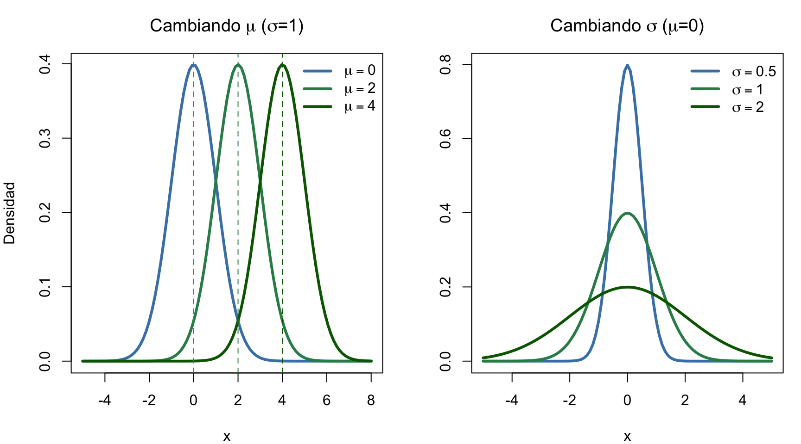
\(\mu\) desplaza, \(\sigma\) ensancha. La Normal es simétrica: media = mediana = moda.
La visualización comparativa de escalas originales vs. estandarizadas se muestra en la siguiente diapositiva.
Importante
Definición general: La estandarización transforma cualquier variable para que tenga media 0 y varianza 1:
\[Z = \frac{X - E(X)}{\sqrt{\text{Var}(X)}} = \frac{X - \mu_X}{\sigma_X}\]
Si \(X \sim N(\mu, \sigma^2)\), entonces \(Z \sim N(0,1)\). La distribución \(N(0,1)\) se llama Normal estándar.
Propiedades fundamentales de Z: - \(E(Z) = 0\) y \(\text{Var}(Z) = 1\) (siempre, para cualquier distribución) - Adimensional: Z no tiene unidades → permite comparar variables completamente diferentes - \(Z = 2\) siempre significa “2 desviaciones estándar por encima de la media”, sea cual sea la variable original
Permite usar una única tabla de probabilidades: Sin estandarización, necesitaríamos infinitas tablas (una para cada combinación de \(\mu\) y \(\sigma\)). Con Z, solo necesitamos la tabla de la \(N(0,1)\).
Hace comparables mediciones distintas: ¿Qué es más extremo: una presión arterial de 150 mmHg o un IMC de 32 kg/m²? Los Z-scores responden: \(z_{PA} = (150-120)/15 = 2.0\) vs \(z_{IMC} = (32-25)/4 = 1.75\) → la PA es más extrema.
Base de toda la inferencia: Los intervalos de confianza y tests de hipótesis usan valores estandarizados (\(z_{\alpha/2} = 1.96\), \(t_{\alpha/2}\)).
Tensión Arterial Sistólica: \(X \sim N(120, 15^2)\) mmHg
| Paciente | TA (mmHg) | \(Z = \frac{X-120}{15}\) | Interpretación clínica |
|---|---|---|---|
| A | 120 | 0.0 | En la media poblacional |
| B | 135 | 1.0 | 1 DE por encima |
| C | 105 | −1.0 | 1 DE por debajo |
| D | 150 | 2.0 | 2 DE por encima → HTA |
| E | 90 | −2.0 | 2 DE por debajo → Hipotensión |
LDL-Colesterol: \(X \sim N(130, \sigma^2=40)\) mg/dL → \(\sigma = \sqrt{40} \approx 6.32\)
| Cálculo | Fórmula | Resultado |
|---|---|---|
| Paciente con LDL = 140 | \(z = \frac{140-130}{6.32}\) | \(z \approx 1.58\) |
| Percentil 90 | \(x = 130 + z_{0.90} \times 6.32\) | \(x \approx 130 + 1.28 \times 6.32 = 138.1\) |
| \(P(LDL > 140)\) | \(P(Z > 1.58)\) | \(\approx 0.057\) (5.7%) |
Glucemia en ayunas: \(X \sim N(100, 10^2)\) mg/dL
| Paciente | Glucemia | Z-score | Interpretación |
|---|---|---|---|
| Normal | 90 | \(z = -1.0\) | 1 DE bajo la media |
| Límite | 100 | \(z = 0.0\) | En la media |
| Prediabetes | 120 | \(z = 2.0\) | 2 DE arriba |
| Diabetes | 140 | \(z = 4.0\) | Muy extremo (\(P < 0.001\)) |
La clave práctica: Para calcular cualquier probabilidad Normal, convertimos a Z y usamos \(N(0,1)\):
\[P(X \leq x) = P\left(Z \leq \frac{x - \mu}{\sigma}\right) = \Phi\left(\frac{x - \mu}{\sigma}\right)\]
mu <- 30; sigma <- 8; x_obs <- 22
z_obs <- (x_obs - mu) / sigma
par(mfrow=c(1,2), mar=c(4,4,3,1))
# Escala original X ~ N(30, 8²)
curve(dnorm(x, mu, sigma), mu-24, mu+24, lwd=3, col="steelblue",
main=expression(paste("Original: X ~ N(30, ", 8^2, ")")),
xlab="Fuerza (kg)", ylab="f(x)")
abline(v=x_obs, col="darkgreen", lwd=2); text(x_obs, 0.04, "x=22", col="darkgreen", pos=4)
# Escala estandarizada Z ~ N(0,1)
curve(dnorm(x), -4, 4, lwd=3, col="seagreen",
main="Estandarizada: Z ~ N(0,1)",
xlab="Z", ylab=expression(phi(z)))
abline(v=z_obs, col="darkgreen", lwd=2); text(z_obs, 0.3, paste0("z=",z_obs), col="darkgreen", pos=4)
X = 22 kg → Z = -1 P(X < 22 ) = P(Z < -1 ) = 0.1587El área a la izquierda de \(x=22\) en la escala original es EXACTAMENTE igual al área a la izquierda de \(z=-1\) en la escala estandarizada.
mu <- 30; sigma <- 8
curve(dnorm(x, mu, sigma), mu-24, mu+24, col="steelblue", lwd=3,
main="Fuerza de Prensión Manual — N(30, 8²) kg",
xlab="Kilogramos", ylab="Densidad", cex.lab=1.2)
abline(v=c(mu-2*sigma, mu-sigma, mu, mu+sigma, mu+2*sigma),
lty=c(3,3,2,3,3), lwd=c(1,1,2,1,1), col=c("grey","grey","red","grey","grey"))
text(mu, 0.052, "μ=30", col="darkgreen", font=2)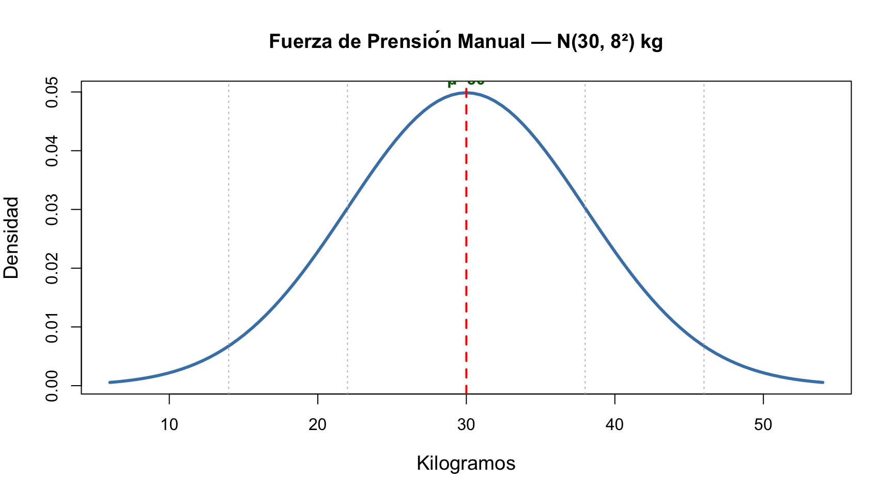
\[P(X < 22) = P\left(Z < \frac{22-30}{8}\right) = P(Z < -1) = 0.159\] \[P(22 < X < 38) = P(-1 < Z < 1) = 0.683\]
Los más usados en inferencia estadistica:
| Percentil | Z | Uso |
|---|---|---|
| 90% | 1.282 | IC 80% |
| 95% | 1.645 | Test unilateral |
| 97.5% | 1.960 | IC 95% bilateral |
| 99% | 2.326 | IC 98% |
| 99.5% | 2.576 | IC 99% |
curve(dnorm(x), -4, 4, col="steelblue", lwd=2,
main="Z = ±1.96 deja 95% central",
xlab="z", ylab=expression(varphi(z)))
abline(v=c(-1.96, 1.96), col="darkgreen", lty=2, lwd=2)
xr <- seq(1.96, 4, 0.01); yr <- dnorm(xr)
polygon(c(xr, rev(xr)), c(yr, rep(0,length(yr))), col=rgb(0,0.5,0.3,0.2), border=NA)
xl <- seq(-4, -1.96, 0.01); yl <- dnorm(xl)
polygon(c(xl, rev(xl)), c(yl, rep(0,length(yl))), col=rgb(0,0.5,0.3,0.2), border=NA)
text(c(-2.5, 0, 2.5), c(0.03, 0.25, 0.03), c("2.5%","95%","2.5%"), font=2)
Z para IC 95%: 1.96
Z para IC 99%: 2.576Un paciente tiene Z = −1.5 en fuerza de prensión y Z = +2.1 en IMC. ¿Cuál de las dos mediciones es más preocupante? ¿Por qué?
Conexión: Muchos fenómenos en fisioterapia son conteos: número de pacientes que responden a un tratamiento, número de sesiones necesarias para alcanzar un objetivo funcional. Las distribuciones Binomial y Poisson modelan estos eventos discretos.
Jacob Bernoulli (1654–1705) en su obra póstuma Ars Conjectandi (1713) estudió experimentos con dos resultados posibles (éxito/fracaso). Su sobrino Daniel Bernoulli aplicó estos modelos a la medicina.
¿Por qué “Binomial”? La fórmula usa el coeficiente binomial \(\binom{n}{k} = \frac{n!}{k!(n-k)!}\), que cuenta el número de formas de elegir \(k\) éxitos entre \(n\) ensayos.
En Fisioterapia: La Binomial modela todo lo que consiste en contar éxitos en un número fijo de pacientes: ¿cuántos de 10 pacientes mejoran con una terapia? ¿cuántos de 20 tratamientos tienen éxito?
Tip
Para recordar: Binomial = nº fijo de ensayos (\(n\)) + probabilidad constante (\(p\)) + independencia entre ensayos. Si tratamos 10 pacientes con la misma terapia y cada uno mejora o no independientemente → Binomial.
Nota
\[P(X = k) = \binom{n}{k} p^k (1-p)^{n-k}, \quad k = 0,1,\ldots,n\]
donde \(\binom{n}{k} = \frac{n!}{k!(n-k)!}\) es el coeficiente binomial.
Ejemplo clínico: Fármaco cura al 70% de pacientes (\(p=0.7\)), \(n=10\) tratados.
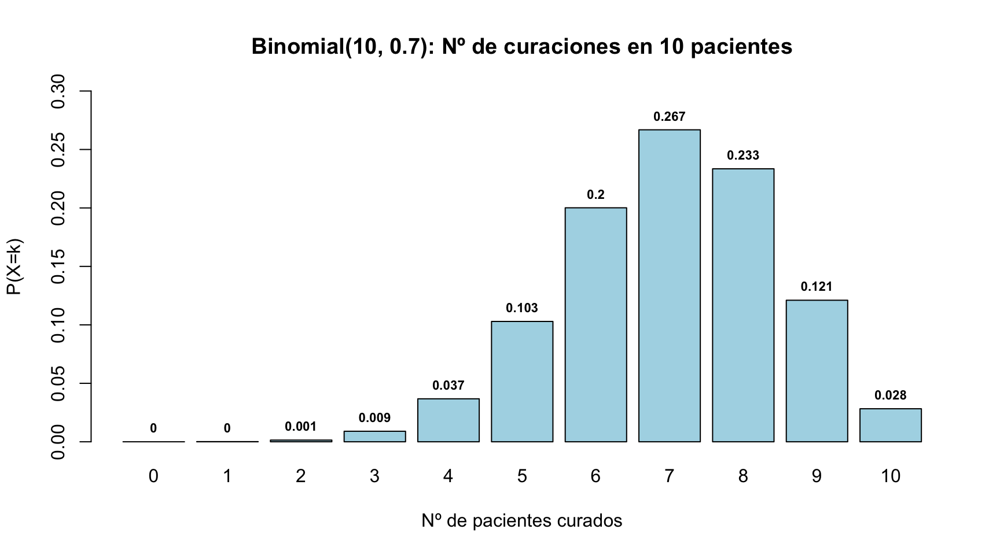
Cálculo a mano — \(P(X=7)\):
\(\binom{10}{7} = \frac{10 \cdot 9 \cdot 8}{3 \cdot 2 \cdot 1} = 120\)
\(P(X=7) = 120 \cdot (0.7)^7 \cdot (0.3)^3 = 120 \cdot 0.0824 \cdot 0.027 = 0.267\)
n <- 10; p <- 0.7; k <- 0:n
Fx <- pbinom(k, n, p)
plot(k, Fx, type="s", lwd=3, col="seagreen",
main=expression(paste("f.d.a. Binomial(10, 0.7): F(k) = P(X ≤ k)")),
xlab="Nº de pacientes curados (k)", ylab="F(k)", ylim=c(0,1))
abline(h=c(0,0.5,1), lty=3, col="grey"); points(k, Fx, pch=19, col="seagreen", cex=1.3)
# Marcar F(7)
points(7, Fx[8], pch=19, col="darkgreen", cex=1.8)
text(7, Fx[8]-0.05, paste0("F(7) = ", round(Fx[8],3)), col="darkgreen", font=2)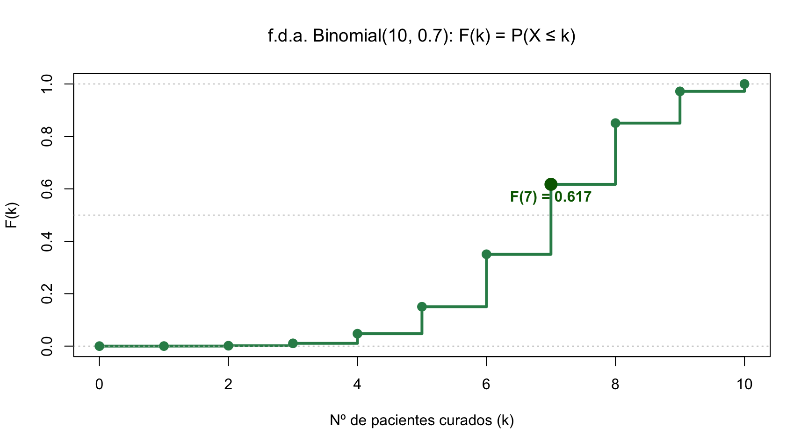
\[F(7) = P(X \leq 7) = \sum_{k=0}^{7} \binom{10}{k} 0.7^k \cdot 0.3^{10-k}\]
Advertencia
En VA discretas, los límites de los intervalos importan:
pbinom(k, n, p)pbinom(k-1, n, p) ← ¡no es lo mismo!1 - pbinom(k-1, n, p)1 - pbinom(k, n, p)P(X ≤ 7) = 0.6172
P(X < 7) = P(X ≤ 6) = 0.3504 ← ¡diferente!
P(X ≥ 7) = 0.6496
P(X > 7) = 0.3828Siméon Denis Poisson (1781–1840) publicó esta distribución en 1837 en su obra Recherches sur la probabilité des jugements. Originalmente modelaba el número de condenas erróneas en juicios.
¿Cuándo surge? La Poisson es el límite de la Binomial cuando \(n \to \infty\) y \(p \to 0\) manteniendo \(\lambda = n \cdot p\) constante. Esto la hace ideal para eventos raros en grandes poblaciones.
En Fisioterapia: La Poisson modela eventos que ocurren con tasa constante: nº de pacientes que llegan a urgencias por esguince en un turno, nº de caídas por mes en una residencia, nº de reacciones adversas por año en una clínica.
Tip
Para recordar: Poisson = tasa constante (\(\lambda\)) + eventos independientes en el tiempo. Si registramos cuántos pacientes llegan con lumbalgia aguda cada semana → Poisson.
Nota
\[P(X = k) = \frac{\lambda^k e^{-\lambda}}{k!}, \quad k = 0, 1, 2, \ldots\]
Ejemplo clínico: Reacciones adversas en clínica de fisioterapia: \(\lambda = 3\)/día
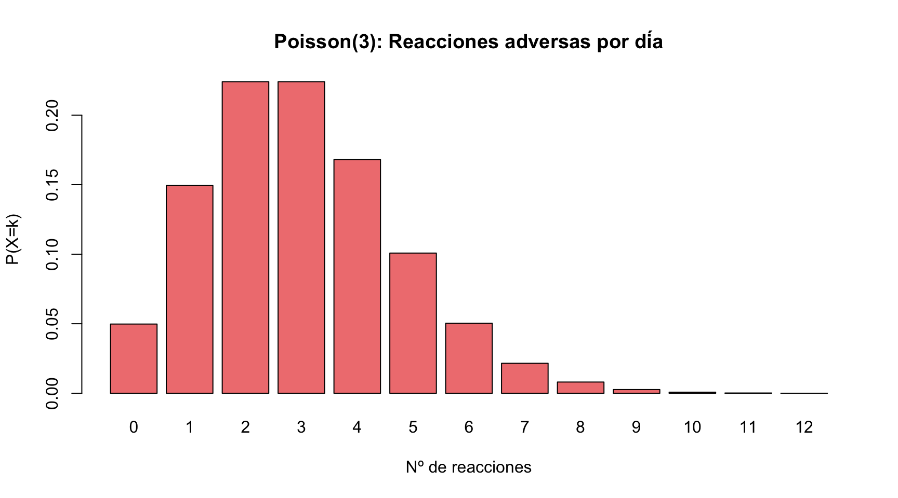
Cálculo a mano — \(P(X=5)\):
\(P(X=5) = \frac{3^5 e^{-3}}{5!} = \frac{243 \cdot 0.0498}{120} \approx 0.101\)
lambda <- 3; k <- 0:12
Fx <- ppois(k, lambda)
plot(k, Fx, type="s", lwd=3, col="seagreen",
main=expression(paste("f.d.a. Poisson(λ=3): F(k) = P(X ≤ k)")),
xlab="Nº de reacciones adversas (k)", ylab="F(k)", ylim=c(0,1))
abline(h=c(0,0.5,1), lty=3, col="grey"); points(k, Fx, pch=19, col="seagreen", cex=1.3)
# Marcar F(2) y F(5)
points(c(2,5), Fx[c(3,6)], pch=19, col=c("darkred","darkblue"), cex=1.8)
text(3, Fx[3]+0.05, paste0("F(2) = ", round(Fx[3],3)), col="darkgreen", font=2)
text(6, Fx[6]+0.05, paste0("F(5) = ", round(Fx[6],3)), col="darkblue", font=2)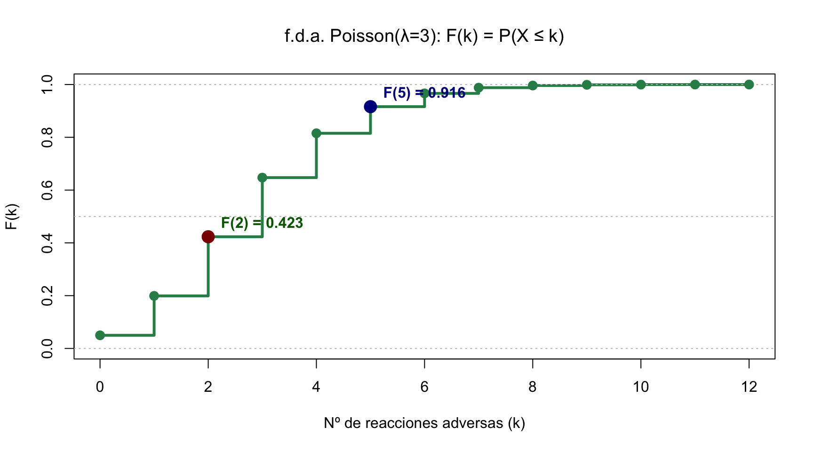
\[P(X \leq 2) = \sum_{k=0}^{2} \frac{3^k e^{-3}}{k!} \quad P(2 < X \leq 5) = F(5) - F(2)\]
La distribución t-Student la usaremos en el Tema 4 para comparar medias de dos grupos de tratamiento en fisioterapia.
William S. Gosset (1908), químico de Guinness, publicó bajo el seudónimo “Student”. Descubrió que al estimar \(\sigma\) con \(s\), el cociente \(\frac{\bar{x}-\mu}{s/\sqrt{n}}\) NO sigue una Normal, sino una distribución con colas más pesadas.
\[T = \frac{\bar{X} - \mu}{S/\sqrt{n}} \sim t_{n-1}\]
Propiedades: - Simétrica alrededor de 0 (como la Normal) - Colas más pesadas que la Normal → valores extremos más probables - Cuando \(n \to \infty\), \(t_{n-1} \to N(0,1)\) - Un solo parámetro: grados de libertad (\(gl = n-1\))
curve(dnorm(x), -4, 4, lwd=3, col="steelblue", ylab="Densidad",
main="Normal vs t-Student (simétrica, colas pesadas)")
curve(dt(x, 3), -4, 4, lwd=3, col="seagreen", add=TRUE)
curve(dt(x, 10), -4, 4, lwd=3, col="darkgreen", add=TRUE)
legend("topright", c("N(0,1)","t(3)","t(10)"), col=c("steelblue","coral","darkgreen"), lwd=3, bty="n")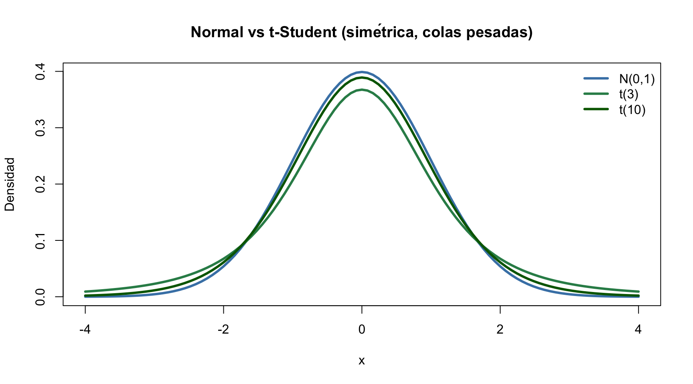
Uso principal: IC para la media con \(\sigma\) desconocida, tests t para una y dos muestras.
La distribución χ² la usaremos en el Tema 5 para analizar tablas de contingencia y estudiar la asociación entre tratamientos de fisioterapia y resultados clínicos.
Karl Pearson (1900). Surge como suma de \(k\) normales estándar independientes al cuadrado:
\[\chi^2_k = Z_1^2 + Z_2^2 + \cdots + Z_k^2 \sim \chi^2_k\]
Propiedades: - NO es simétrica (asimétrica positiva, cola a la derecha) - Solo toma valores \(\geq 0\) - \(E(\chi^2_k) = k\), \(\text{Var}(\chi^2_k) = 2k\) - Cuando \(k \to \infty\), tiende a Normal
curve(dchisq(x, 1), 0, 15, lwd=3, col="seagreen", ylab="Densidad",
main=expression(paste(chi^2, " — Asimétrica, solo valores ≥ 0")))
curve(dchisq(x, 3), 0, 15, lwd=3, col="darkgreen", add=TRUE)
curve(dchisq(x, 6), 0, 15, lwd=3, col="steelblue", add=TRUE)
legend("topright", c(expression(chi[1]^2),expression(chi[3]^2),expression(chi[6]^2)),
col=c("coral","darkgreen","steelblue"), lwd=3, bty="n")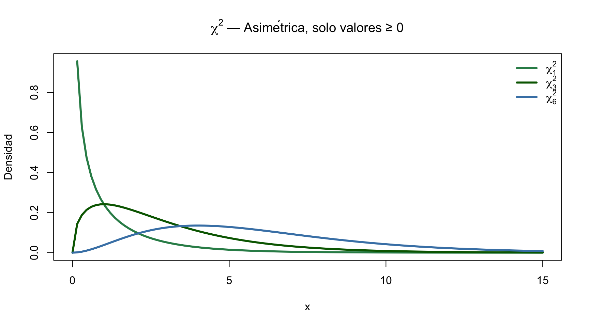
Uso principal: Test \(\chi^2\) para tablas de contingencia, test de bondad de ajuste.
La distribución F la usaremos en el Tema 6 al evaluar modelos de regresión y comparar la variabilidad explicada por distintas variables clínicas.
George W. Snedecor (1934), nombrada en honor a R.A. Fisher. Surge como cociente de dos \(\chi^2\) independientes divididas por sus grados de libertad:
\[F_{k_1, k_2} = \frac{\chi^2_{k_1} / k_1}{\chi^2_{k_2} / k_2}\]
Propiedades: - NO es simétrica (asimétrica positiva, como \(\chi^2\)) - Solo toma valores \(\geq 0\) - Dos parámetros: \(gl_1\) (numerador) y \(gl_2\) (denominador)
curve(df(x, 5, 5), 0, 5, lwd=3, col="steelblue", ylab="Densidad",
main="Distribución F — Asimétrica, dos parámetros")
curve(df(x, 10, 5), 0, 5, lwd=3, col="seagreen", add=TRUE)
curve(df(x, 5, 20), 0, 5, lwd=3, col="darkgreen", add=TRUE)
legend("topright", c("F(5,5)","F(10,5)","F(5,20)"), col=c("steelblue","coral","darkgreen"), lwd=3, bty="n")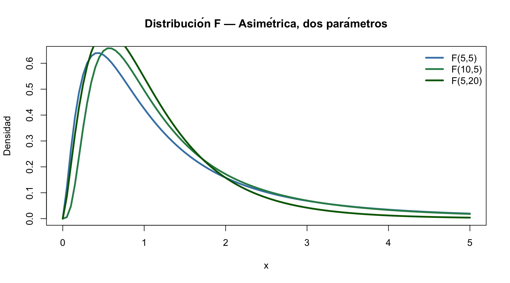
Uso principal: Test F para igualdad de varianzas, ANOVA, regresión (test F global).
| Distribución | ¿Simétrica? | P-valor bilateral | Función R |
|---|---|---|---|
| Normal | ✓ Sí | 2 * pnorm(-abs(z)) |
pnorm() |
| t-Student | ✓ Sí | 2 * pt(-abs(t), df) |
pt() |
| \(\chi^2\) | ✗ No | No tiene sentido bilateral (test de una cola) | pchisq() |
| F | ✗ No | Usar cola adecuada según \(F_{obs}\) | pf() |
Para \(\chi^2\) y F (asimétricas), el test es inherentemente unilateral porque solo nos preocupan valores grandes del estadístico (discrepancias grandes de \(H_0\)).
χ² = 13.87 gl = 6 → P = 0.0311
F = 3.5 gl = 5 , 20 → P = 0.0196Advertencia
Para estudiantes: t es simétrica → P-valor bilateral se calcula como \(2 \times P(T > |t|)\). \(\chi^2\) y F no son simétricas → el P-valor se calcula solo en la cola correspondiente. Nunca multipliques por 2 para \(\chi^2\) o F.
| Situación clínica | Distribución | Parámetros | Función R |
|---|---|---|---|
| ROM, fuerza, PA (variables continuas) | Normal | \(\mu, \sigma\) | dnorm(), pnorm() |
| Éxitos en n pacientes (curación, mejoría) | Binomial | \(n, p\) | dbinom(), pbinom() |
| Eventos raros por unidad de tiempo | Poisson | \(\lambda\) | dpois(), ppois() |
| Inferencia sobre medias | t-Student | \(gl\) | dt(), pt() |
| Comparación de varianzas | F de Snedecor | \(gl_1, gl_2\) | df(), pf() |
| Tablas de contingencia | \(\chi^2\) | \(gl\) | dchisq(), pchisq() |
Tip
Regla nemotécnica: d = densidad/probabilidad puntual, p = probabilidad acumulada (CDF), q = cuantil (percentil), r = aleatorio.
| Normal | Binomial | Poisson | |
|---|---|---|---|
| Tipo | Continua | Discreta | Discreta |
| Parámetros | \(\mu, \sigma\) | \(n, p\) | \(\lambda\) |
| Soporte | \(\mathbb{R}\) | \(\{0,\ldots,n\}\) | \(\{0,1,2,\ldots\}\) |
| \(E(X)\) | \(\mu\) | \(np\) | \(\lambda\) |
| \(\text{Var}(X)\) | \(\sigma^2\) | \(np(1-p)\) | \(\lambda\) |
| Ejemplo clínico | ROM, fuerza | Éxitos terapéuticos | Eventos adversos |
par(mfrow=c(1,3), mar=c(4,4,3,1))
curve(dnorm(x), -4,4, col="steelblue", lwd=2, main="N(0,1)", xlab="x")
barplot(dbinom(0:10,10,0.5), names=0:10, col="seagreen",
main="Bin(10,0.5)", xlab="x", ylab="P(X=x)")
barplot(dpois(0:10,3), names=0:10, col="seagreen",
main="Pois(λ=3)", xlab="x", ylab="P(X=x)")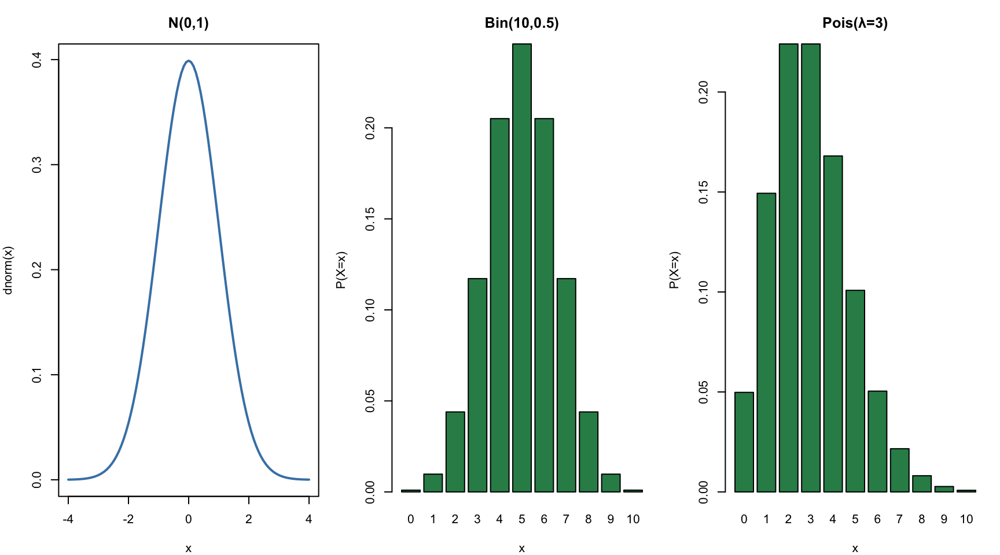
Conexión T02→T03: Las aproximaciones entre distribuciones son la base del Teorema Central del Límite, que en el Tema 3 nos permitirá construir intervalos de confianza para cualquier parámetro.
Calcular probabilidades exactas con la Binomial requiere evaluar factores combinatorios \(\binom{n}{k}\) que se vuelven imposibles de calcular a mano cuando \(n\) es grande. Las aproximaciones nos permiten usar la Normal (mucho más manejable) en su lugar.
Idea clave: Bajo ciertas condiciones, las distribuciones discretas “se parecen” a la Normal cuando el tamaño muestral es grande. Esto es consecuencia del Teorema Central del Límite.
| Aproximación | Condición | Fórmula |
|---|---|---|
| Binomial → Normal | \(np \geq 5\) y \(n(1-p) \geq 5\) | \(B(n,p) \approx N(np,\; np(1-p))\) |
| Poisson → Normal | \(\lambda \geq 10\) | \(Po(\lambda) \approx N(\lambda,\; \lambda)\) |
¿Cuándo funciona? Cuando \(np \geq 5\) y \(n(1-p) \geq 5\), el histograma binomial adopta forma de campana.
par(mfrow=c(2,2), mar=c(4,4,3,1))
# Caso 1: NO se cumple (n=10, p=0.1 → np=1 < 5)
n<-10; p<-0.1; x<-0:n
barplot(dbinom(x,n,p), names=x, col="seagreen", main=paste0("NO aprox: n=",n,", p=",p," (np=",n*p,"<5)"))
# Caso 2: NO se cumple (n=10, p=0.9 → n(1-p)=1 < 5)
p<-0.9
barplot(dbinom(x,n,p), names=x, col="seagreen", main=paste0("NO aprox: n=",n,", p=",p," (n(1-p)=",n*(1-p),"<5)"))
# Caso 3: SÍ se cumple (n=50, p=0.3 → np=155, n(1-p)=35≥5)
n<-50; p<-0.3; x<-0:n
bp <- barplot(dbinom(x,n,p), names=ifelse(x%%5==0,x,""), col="lightblue",
main=paste0("SÍ aprox: n=",n,", p=",p," (np=",n*p,"≥5, n(1-p)=",n*(1-p),"≥5)"))
curve(dnorm(x,n*p,sqrt(n*p*(1-p)))*1, add=T, col="darkgreen", lwd=2, n=200)
# Caso 4: SÍ se cumple (n=100, p=0.5 → ambos ≥5)
n<-100; p<-0.5; x<-0:n
bp <- barplot(dbinom(x,n,p), names=ifelse(x%%25==0,x,""), col="lightblue",
main=paste0("SÍ aprox: n=",n,", p=",p," → forma campana perfecta"))
curve(dnorm(x,n*p,sqrt(n*p*(1-p)))*1, add=T, col="darkgreen", lwd=2, n=200)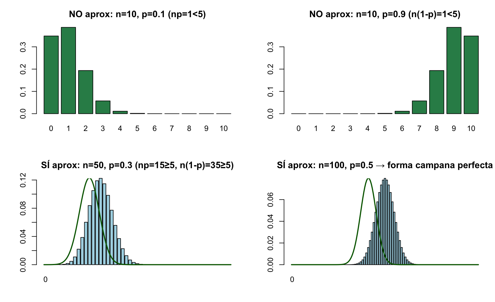
La Binomial es discreta (barras) y la Normal es continua (curva). Para aproximar \(P(X \leq k)\), sumamos/restamos 0.5:
| Probabilidad | Sin corrección | Con corrección (±0.5) |
|---|---|---|
| \(P(X \leq k)\) | \(\Phi\left(\frac{k-np}{\sqrt{np(1-p)}}\right)\) | \(\Phi\left(\frac{k+0.5-np}{\sqrt{np(1-p)}}\right)\) |
| \(P(X \geq k)\) | \(1-\Phi\left(\frac{k-np}{\sqrt{np(1-p)}}\right)\) | \(1-\Phi\left(\frac{k-0.5-np}{\sqrt{np(1-p)}}\right)\) |
Ejemplo clínico: Fármaco 40% efectivo, \(n=20\) pacientes. \(P(X \leq 10)\):
Exacto (Binomial): 0.8725
Normal sin corrección: 0.8193
Normal con corrección: 0.8731Tip
La corrección de continuidad (+0.5) reduce el error de aproximación drásticamente. En el ejemplo, el error pasa de ~5pp a <0.1pp.
¿Cuándo funciona? Cuando \(\lambda \geq 10\), el histograma de Poisson adopta forma simétrica.
par(mfrow=c(2,2), mar=c(4,4,3,1))
# Caso 1: λ=2 → NO se cumple (muy asimétrica)
lambda<-2; x<-0:(lambda*3)
barplot(dpois(x,lambda), names=x, col="seagreen",
main=paste0("NO aprox: λ=",lambda," < 10 (asimétrica)"))
# Caso 2: λ=5 → NO se cumple (todavía asimétrica)
lambda<-5; x<-0:(lambda*3)
barplot(dpois(x,lambda), names=x, col="mediumseagreen",
main=paste0("NO aprox: λ=",lambda," < 10"))
# Caso 3: λ=10 → SÍ se cumple (empieza a ser simétrica)
lambda<-10; x<-0:(lambda*2)
bp <- barplot(dpois(x,lambda), names=ifelse(x%%5==0,x,""), col="lightblue",
main=paste0("SÍ aprox: λ=",lambda," ≥ 10"))
curve(dnorm(x,lambda,sqrt(lambda))*1, add=T, col="darkgreen", lwd=2, n=200)
# Caso 4: λ=25 → SÍ se cumple (claramente acampanada)
lambda<-25; x<-0:(lambda*2)
bp <- barplot(dpois(x,lambda), names=ifelse(x%%10==0,x,""), col="lightblue",
main=paste0("SÍ aprox: λ=",lambda," → forma campana clara"))
curve(dnorm(x,lambda,sqrt(lambda))*1, add=T, col="darkgreen", lwd=2, n=200)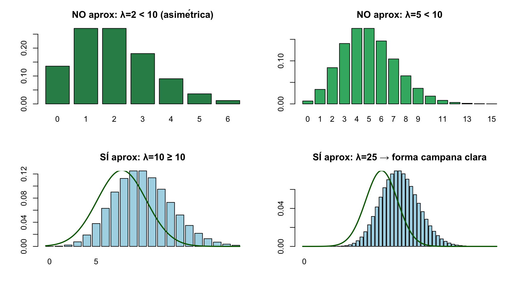
Cálculo manual: Con \(n=100\), calcular \(\binom{100}{50}\) a mano es imposible. La Normal lo resuelve con una fórmula simple.
Inferencia: Los IC y tests de hipótesis para proporciones usan la aproximación Normal (por eso usamos \(z_\alpha\), no \(t\)).
Teoría: El TCL garantiza que cualquier suma de variables independientes tiende a la Normal cuando \(n\) es grande — es la base de toda la inferencia estadística.
Software moderno: Aunque R calcula valores exactos, entender las aproximaciones ayuda a comprender por qué funcionan los métodos estadísticos.
Importante
Condiciones para aplicar la aproximación Normal a la Binomial: \(np \geq 5\) Y \(n(1-p) \geq 5\). Si no se cumplen, usar el método exacto (Binomial). Para Poisson: \(\lambda \geq 10\). Si no, usar el método exacto (Poisson).
Ejercicio Clínico — Aplicación de Probabilidad y Distribuciones
Un estudio sobre recuperación funcional tras accidente cerebrovascular reporta que el 30% de los pacientes recupera la marcha independiente en 6 meses.
dbinom(4, 10, 0.3).pbinom(5, 10, 0.3, lower.tail=FALSE).(95-75)/15. ¿Es un valor atípico?pnorm(95, 75, 15). Interpreta el resultado.d, p, q, r para trabajar con cualquier distribuciónReferencias complementarias del libro:
Referencias
Probabilidad y Variables Aleatorias con R – Bioestadística para Fisioterapia Probabilidad y Variables Aleatorias con R – Bioestadística para Fisioterapia Probabilidad y Variables Aleatorias con R – Bioestadística para Fisioterapia Bioestadística para Fisioterapia Tema II — Distribuciones Normal, Binomial y Poisson Tema II — Distribuciones Normal, Binomial y Poisson

Bioestadística · Grado en Fisioterapia · UGR